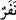

okunması bitince uyarıcılar olarak kavimlerine dönmüşlerdi.
“Bir zaman, cinlerden” yedi yahut dokuz kişilik “bir topluluğu Kur’ân dinlemek
üzere sana” meylettirip “yöneltmiştik.” Kur’ân’ı dinlemek üzere “Ona geldiklerinde
(birbirlerine): “Susun, (dinleyin)” dediler.” Peygamber (s.a.) tilâveti tamamlayıp
“(Okuma) Bitirilince de uyarıcılar olarak” onlara uyarıda bulunmaları mukadder
olarak “kavimlerine döndüler” Yâni Kur’ân’a inandılar, duydukları hakikatlere icâbet
ettiler ve uyarıcılar olarak kavimlerine döndüler.
“Bir zaman, cinlerden bir topluluğu Kur’ân dinlemek üzere sana yöneltmiştik.” “
”, “ondan daha az olan bir sayı”dır. Çoğulu “
”dır.
Râgıb şöyle demiştir: “Nefer”, “kendileriyle harp ve benzeri seferlere çıkılabilecek
erkekler topluluğu”dur. Cinler bir takım rûhânî yaratıklardır. Rûhânîler başlıca üç
kısımdır: 1. Hayırlılar, meleklerdir. 2. Şerli olanlar, şeytanlardır. 3. Vasat durumda olup
içlerinde hem hayırlı, hem de şerli olanlar vardır ki bunlar da cinlerdir.
Said b. Müseyyeb şöyle demiştir: Meleklerde erkeklik ve dişilik yoktur. Melekler
doğmak suretiyle çoğalmazlar. Yemezler, içmezler. Şeytanlar erkekli dişilidirler.
Doğarak çoğalırlar, ölmezler. Bilakis babaları iblis gibi dünyada dâimî yaşarlar. Cinler
doğarlar, erkekli dişilidirler ve ölürler.
Fakîr (Bursevî) der ki: Cinlerde de insanlar gibi değişik mezhepler vardır. Hatta
onların da Râfizî olanları ve buna benzer mezhep sahibi bulunanları vardır. Cinler kendi
aralarında savaşırlar. Fakat ulemânın: “İblis cinlerin babasıdır sözü müşkildir.”[40]
Çünkü bu durum cinlerle şeytanlar arasında îmân ve küfürden başka bir fark olmamasını
gerektirir. Bu husus böyle bilinmelidir.
“Ey Muhammed (s.a.) Kur’ân’ı dinlemeleri mukadder olan bir cin topluluğunu sana
yönelttiğimiz zamanı kavmine anlat.”
“Ona geldiklerinde (birbirlerine): “Susun, (dinleyin)” dediler.” “İnsât”,
“konuşmayı bırakıp sese kulak vermek ve dinlemek”tir. Yâni “Kur’ân’ı dinlemek için
susun” demektir. Burada şuna işâret edilmektedir ki, cinler de insanlar gibi boş sözler
sarfedip gürültü ve şamata yapmaktadırlar. Ayrıca makbul olan hırs ve arzuya da işâret
edilmektedir. Bazı ârifler şöyle demiştir: Hitabın heybeti ve müşâhedenin haşmet ve
ihtişamı onların dillerini bağlamıştır. Çünkü hazret makamında sus pus olup eriyip
kaybolmaktan başka yapılacak şey yoktur.
“(Okuma) bitirilince de uyarıcılar olarak kavimlerine döndüler.” Bu cinlerin
uyarıcılar olarak kavimlerine dönmeleri Allah’ın elçisi olan Peygamberimiz (s.a.)’in
elçileri olmalarını gerektirmez. Çünkü bir kişi nebî ve rasûl olmadığı ve hiçbir kimse
tarafından görevlendirilmediği halde uyarıcı olabilir. Cinlerdeki bu uyarı görevi
peygamberlik gibi bir gaye olmadan gerçekleşmiştir. Bu hususla ilgili detay bilgiler “Ey
cin ve insan topluluğu…” (En’am, 6/130) âyetinde geçmiştir.
Rivâyet olunur ki cinler semâda meleklerin yüce meclisine kulak kabartır, oradan bazı
haberler çalarlardı. Sonra semâ korunup cinler de ışınlarla imhâ edilmeye başlanınca